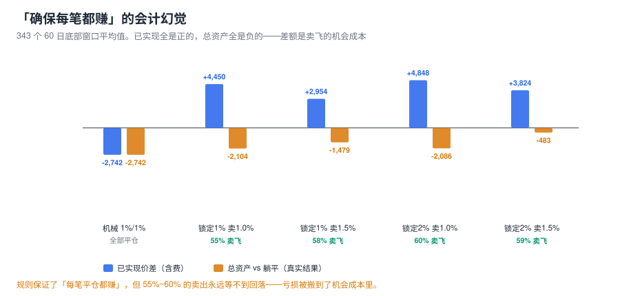
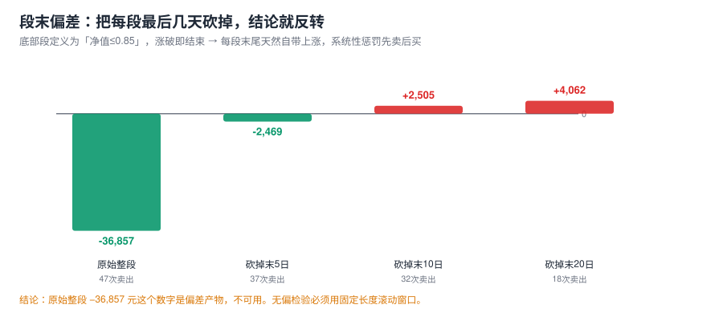
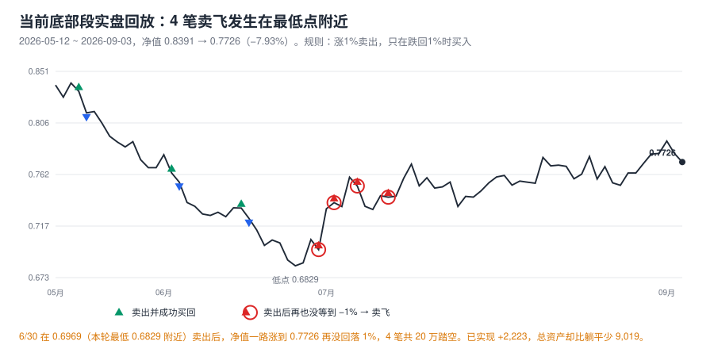

先把机制说清楚。基金份额赎回遵循 FIFO（先进先出）：你卖出时，基金公司按"最早买入的份额先出"结算持有天数。你有 27 万底仓（持有远超 7 天），每次卖 5 万：
FIFO 队头始终指向"最老的份额"。只要卖出频率不快于 平均 1.3 天/笔（27万÷5万=5.4 笔老份额垫底），队头永远是你早已持有的老份额——赎回费 0。你这套规则的数学前提完全成立：
| 一周内卖出次数 | 队头份额年龄 | 结果 |
|---|---|---|
| 2 ~ 5 笔 | 仍是老份额 | 安全（费 0） |
| 6 笔 | ≈0.7 天 | 惩罚 1.5% |
| 8 笔 | ≈2.3 天 | 惩罚 1.5% |
在 5 个历史底部段共 47 笔卖出中，这套机制实际只被罚了 1 笔（750 元）。如果没有这个底仓垫底（比如仓位小、或每次卖出规模小），47 笔全部要按 1.5% 计罚：
唯一要防的边界：急涨行情里 1% 触发会连续报卖，一周 6 笔以上就击穿垫底。到那时宁可手动暂停卖出（见第六节守则）。
你方案的另一半假设是"买入卖出都按当前波动，确保每个当前波动是赚的"。这里有一个场外基金绕不过去的物理约束：15:00 前下单按当日收盘净值成交，而你下单时不知道收盘净值。所有"今天涨了所以我今天按今天的净值卖掉"的推理都是偷看答案。真实可得的是昨涨 1% → 今按今收净值卖出。
把历史上所有卖→买回配对（机械 1%触发，5 个底部段，29 笔已平仓）：
| 指标 | 数值 | 含义 |
|---|---|---|
| 配对成功（卖后买回） | 29 笔 | 另有 17 笔卖出直到段末都没等到买回 |
| 平仓胜率 | 41.4% | 不到一半的"波动"真的赚了 |
| 毛收益 ≥ +1% | 31.0% | 你假设 100%，实际不到 1/3 |
| 单笔毛收益中位 | −0.376% | 典型的一笔是亏的 |
| 最好 / 最差 | +5.51% / −5.15% | 分布宽，方向不可控 |
原因很朴素：卖出后的反弹和下跌，与卖出时的那 1% 无关。昨涨 1% 卖出后，明天可以接着涨（你卖飞），也可以回落超过 1%（你赚）。净值序列的日自相关接近 0（前几轮已验证），所以"确保每笔都赚"在信息上不存在。
那把你的规则写得更死一点——卖出后只在净值跌回卖出价的 99% 以下才买回。这样每一笔平仓的波动按定义都 ≥ +1%。回测结果（343 个无偏 60 日窗口的平均）：
| 规则 | 已实现价差/窗口 | 总资产 vs 躺平/窗口 | 卖飞比例 |
|---|---|---|---|
| 机械 1%/1%（对照） | −2,742 | −2,742 | — |
| 锁定1% · 卖触发1.0% | +4,450 | −2,104 | 55% |
| 锁定1% · 卖触发1.5% | +2,954 | −1,479 | 58% |
| 锁定2% · 卖触发1.0% | +4,848 | −2,086 | 60% |
| 锁定2% · 卖触发1.5% | +3,824 | −483 | 59% |

左列全正、右列全负，这就是你这套方案的本质：它是一台"已实现利润生成器"，代价是把等量的钱搬进机会成本。55%~60% 的卖出在窗口内永远等不到 −1% 的回落；等到的那部分，中位要等 8 天，一成要等 40 天以上。账面永远在赢，钱却在流失。
诚实记录一个方法论错误。上一版脚本用"净值 ≤0.85"划底部段，涨破 0.85 就结束——每段末尾天然是上涨，系统性惩罚先卖后买。修正方法：把每段末尾几天砍掉重测：

最终的无偏检验：343 个"起点在底部区、固定 60 交易日"的滚动窗口（不预知窗口怎么结束）：
| 触发（卖/买） | 均值/窗口 | 中位 | 胜率 | 最好 | 最差 |
|---|---|---|---|---|---|
| 0.5 / 0.5 | −6,013 | −7,275 | 26% | +20,760 | −31,376 |
| 1.0 / 1.0（你的参数） | −2,742 | −2,453 | 37% | +14,819 | −30,542 |
| 1.5 / 1.5 | −1,442 | −608 | 46% | +13,321 | −27,740 |
| 1.5 / 2.5 | −1,351 | −2,749 | 35% | +51,757 | −32,306 |
| 2.0 / 2.0 | −1,711 | −1,222 | 32% | +11,007 | −24,896 |
结论修正为：机械倒T在底部区是轻微负期望（均值 −1,351 ~ −6,013，远好于段末检验的 −36,857），但依然不为正。你的 (1.0, 1.0) 不是最差也不是最好——参数差异（约 4,700 元/窗口）远小于最差月份的回撤（−3 万），不值得调。
这一段净值 0.8391 → 0.7726（−7.93%）。三个口径对比：
| 策略 | 已实现 | 总资产 | 卖/买/未平 |
|---|---|---|---|
| 躺平不动 | — | −21,398 | — |
| 机械 1%/1% · ETF 516670 | −460 | +495 | 16 / 13 / 7 |
| 机械 1%/1% · 014414 A类 | −2,347 | −2,122 | 15 / 12 / 7 |
| 锁定1% · ETF | +2,223 | −9,019 | 7 / 3 / 4 |
| 锁定2% · ETF | +4,065 | −7,043 | 7 / 3 / 4 |

注意两个反直觉的点：
用不同阈值重划底部区（含历史分位口径），60 日无偏窗口重跑：
| 阈值 | 窗口数 | 机械1/1 均值 | 机械胜率 | 锁定1% 均值 | 锁定胜率 |
|---|---|---|---|---|---|
| 0.80 / p20(0.7979) | 159 | −6,178 | 18% | −8,286 | 14% |
| 0.82 / p25(0.8154) | 229 | −5,498 | 27% | −7,222 | 20% |
| 0.85 / p30(0.8272) | 343 | −3,703 | 31% | −4,262 | 31% |
| 0.88 | 443 | −2,069 | 47% | −1,545 | 44% |
所有阈值下均值全为负——结论不依赖 0.85 这条线。且有个规律：越深的底部区（0.80）期望越差（−6,178），越接近常规震荡（0.88）越接近打平。深熊里"先卖"踏空的代价更大。另一处口径修正：本节引擎把"底部区内才允许交易"建进去了（严格对应你的规则），比第四节不带此限制的 −2,742 更悲观——你的规则的诚实数字是机械 −3,703 / 锁定 −4,262 每窗，之前 −2,742 略有美化。
锁定比例 × 卖出触发的 20 格网格（底部区 0.85，343 窗口）：均值全为负，最好的格子是 lock 2% / 卖 1.5%（均值 −483、中位 +1,516、胜率 52%）——就是报告主表已采用的那格。规律清晰：卖出触发放宽到 1.5%（少卖、卖在更大波动上）一致优于 0.5%~2.0%；锁定比例影响不大。均值 −483 仍是样本内挑选，当作上界而非期望。
| 动作 | 触发条件 | 具体价位 |
|---|---|---|
| 卖出 5 万 | 昨日收盘较前日涨 ≥1% | 昨日净值 ≥ 0.7650 |
| 买回 5 万 | 净值 ≤ 卖出价 × 0.99 | 如卖在 0.7800 → 只在 ≤0.7722 买回 |
| 停止卖出 | 滚动 7 天内已卖 4 笔 | 护住 FIFO 垫底（6 笔击穿，罚 750/笔） |
| 全面停 T | 净值 > 0.85 或猪价月涨 15% | 直接满仓拿趋势 |
数据：SQLite data/fund_history.db（014414 净值 2022-04-19~2026-09-03）· 费率：招商基金官网/晨星四方核实（N<7天 1.5%，N≥7天 0）· 脚本：t_fifo_swing.py、t_fifo_bias.py、t_fifo_sensitivity.py、make_fifo_charts.py · 本文为数据回测，不构成投资建议。